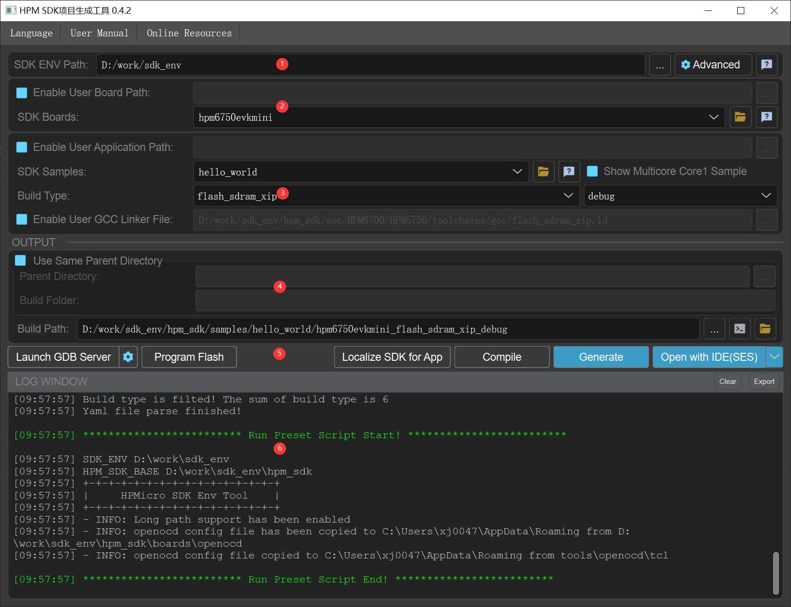

HPM SDK Windows 开发环境配置工具
快速开始指南
- 安装FT2232驱动。

- 双击
start_cmd.cmd，该脚本将开启一个Windows命令行窗口，之后文中将以sdk prompt指代该命令行窗口。（sdk prompt中将把所有HPM SDK开发依赖的环境变量以及对应工具的路径设置正确，作用范围仅在sdk prompt内，不影响当前系统中的变量。） - 双击
generate_all_ses_projects.cmd，该脚本会在同级目录下生成文件夹samples_ses_project，该文件夹包含各种类型板子所有用例的segger工程
start_gui 快速上手
start_gui.exe 是一款适配 hpm_sdk 的项目构建可视化工具。通过该工具，您可以方便地对 hpm_sdk 中的 samples
进行构建，也可以自定义 sample 目录来构建自己的应用程序。软件整体界面如下图所示:

上方菜单栏支持设置中英双语以及打开当前使用指南。同时为方便用户查看使用 hpm_sdk，工具内置了三个快速打开 hpm_sdk 文档入口，即上图中三个浅紫色圆形按钮。
SDK ENV 右侧的帮助按钮会打开当前 hpm_sdk 的帮助文档首页。SDK Boards
下拉框右侧的帮助按钮会直接打开当前选择的开发板文档。SDK Samples 下拉框右侧的帮助按钮会直接打开当前选择的 sample 文档。您可以根据需要选择打开对应的文档。
工具通过不同的背景色分为了以下几个功能区：
-
SDK ENV 设置：此处可手动配置 SDK ENV 路径，点击
Advanced按钮后，可以对hpm_sdk以及CMake、Ninja等工具路径进行更详细的配置； -
Board 设置：默认情况下，工具会列出
hpm_sdk/boards文件夹下所有的开发板，您可以点击下拉框右侧的帮助按钮打开当前选择开发板的本地文档。同时，工具也支持加载用户自定义的开发板配置。用户需要首先勾选Enable User Board Path复选框启用User Board搜索功能，然后选择想要搜索的开发板文件夹，软件会搜索当前文件夹以及第一级子文件夹，当查找到文件夹下存在CMakeLists.txt 以及 与文件夹同名的 yaml 配置文件时，会识别当前文件夹为开发板配置，加入到列表项中。当当前文件夹被识别为开发板配置时，不会再搜索子文件夹；注意：如果使用自定义 board，CMake 构建过程会尝试在自定义目录下搜索与 board 目录同名的 .cfg 文件作为板级 openocd 的配置文件，若无此文件，openocd 将不会添加任何板级配置文件
-
Sample 设置：选择了开发板后，工具会根据开发板的yaml配置文件自动筛选符合条件的 sample。默认情况下，会展示
hpm_sdk/samples文件夹下经过筛选的 sample，您可以点击下拉框右侧的帮助按钮打开当前选择 sample 的本地文档。对于双核程序，该 sample 列表默认隐藏 core1 项目，用户如果想要展示 core1 项目，只需要点击右侧复选按钮进行设置即可。同时，工具也支持加载用户自定义的 sample 文件夹。用户需要首先勾选Enable User Application Path复选框启用User Applications搜索功能，然后选择想要搜索的 sample 文件夹，软件会搜索当前文件夹以及所有子文件夹，当查找到文件夹下存在CMakeLists.txt时，会查找当前CMakeLists.txt是否调用了hpm-sdk，符合条件的会识别为 sample 文件夹并加入到列表项中。当选择了 sample 之后，会自动识别当前 sample 支持的 hpm build type 以及 cmake build type 并加入到列表项中；当Enable User GCC Linker File未勾选时，hpm build type 切换时会自动将当前 hpm build type 使用的链接脚本加入到对应的输入框中，当勾选了该选项后，用户需要手动添加需要的链接脚本； -
Output 设置：用户可以在 Output 区域定义工程的构建生成路径。默认情况下，项目会生成在
${sample}/${board}_${build_type}文件夹。同时，工具支持选择一个父文件夹，将多个项目生成在当前父文件夹下。该功能需要用户勾选Use Same Parent Directory复选框，然后选择一个父文件夹，即Parent Directory，之后构建生成的项目均会保存在当前文件夹下，Build Folder为项目文件夹名称，工具会采用${sample}_${board}_${build_type}规则自动生成文件夹名称，用户也可以手动修改文件夹名称。在Build Path输入框右侧提供了打开Build Path控制台按钮以及打开Build Path资源管理器按钮。打开的控制台默认加载了SDK_ENV的环境变量，可以直接编译Build Path目录下程序以及运行命令； -
构建选项： 当配置完毕后，用户可点击
Generate按钮构建项目，当项目正确构建后，Open with IDE按钮会高亮，点击后会用默认选择的 IDE 拉起当前项目，用户可以通过右侧箭头选择想要使用的 IDE。工具也提供了GCC Compile按钮直接编译正确构建的程序。考虑到用户对于hpm_sdk的各种使用需求，工具也支持将当前构建项目使用的hpm_sdk文件提取到单独目录，即Localize SDK for App按钮提供的功能。hpm_sdk会被本地化到当前应用的 CMakeLists.txt 同级目录，以hpm_sdk_localized_sdk_for_${BOARDNAME}命名。区域3中的SDK Samples下拉框会对已本地化项目进行提示，同时已本地化的项目支持UnLocalize SDK for App操作转换回之前未本地化的工程。在区域5的最左侧，工具提供了启动 GDB Server 的快捷入口，当前支持的 GDB Server 为 OpenOCD，点击后用户可以进行简单配置并快速启动 GDB Server。GDB Server 默认会记录用户的配置，配置完成下次可直接启动，但当用户切换board后，再次启动 OpenOCD 需要重新配置。同时，工具也提供了FLASH镜像烧写快速烧写功能（不支持RAM镜像直接烧写），该功能通过调用 OpenOCD 来执行烧写操作，且与 GDB Server 启动共用一套 OpenOCD 启动配置来简化操作。 -
日志窗口：日志窗口会显示当前的日志信息，日志信息支持清空和导出。
目录结构:
- hpm_sdk: hpm_sdk存放目录，当更新SDK时，需要将SDK解压至该文件夹，并确保可以存在hpm_sdk\cmake路径
- toolchains:
工具链存放目录。当更新工具链时，将对应工具链解压至该文件夹(以TOOLCHAIN_NAME为例)，并确保可以在toolchains\TOOLCHAIN_NAME\bin路径下可以找到riscv32-elf-unknown-gcc.exe可执行文件
- 注意:
- 使用不同toolchain的时候，对应TOOLCHAIN_NAME需要在start_cmd.cmd中进行正确配置
- 注意:
- tools:
- ninja
- cmake
- python3
- openocd
- scripts
- project_generator
- FTDI_InstallDriver.exe: FT2232 windows 驱动
- doc: 文档目录
常见问题：
无法找到ftdi调试器
- 确保正确安装FTDI_InstallDriver.exe驱动。注意：如果更换了PC USB端口, 有可能需要重新安装驱动
Segger Embedded Studio无法进行调试
可以做下尝试
- 重新打开Segger Embedded Studio
- 在Windows任务管理器中将残留的openocd进程终止
- 将开发板上启动模式拨成“在系统编程“或者“串行启动”，再按RESET按钮，再尝试调试
Windows 10路径长度限制
若要解除路径长度限制可以通过导入tools/scripts/win10_enable_long_path.reg。 有关该限制的详细信息, 请参考https://docs.microsoft.com/en-us/windows/win32/fileio/maximum-file-path-limitation?tabs=cmd